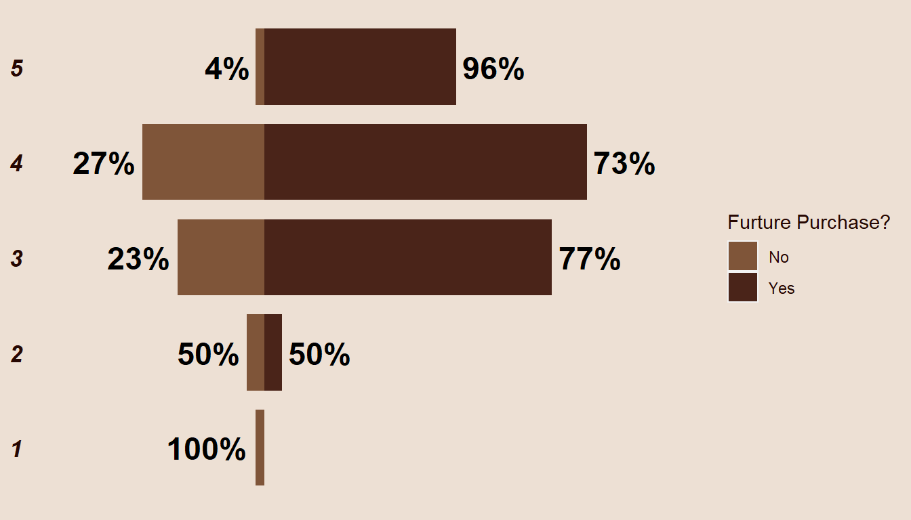
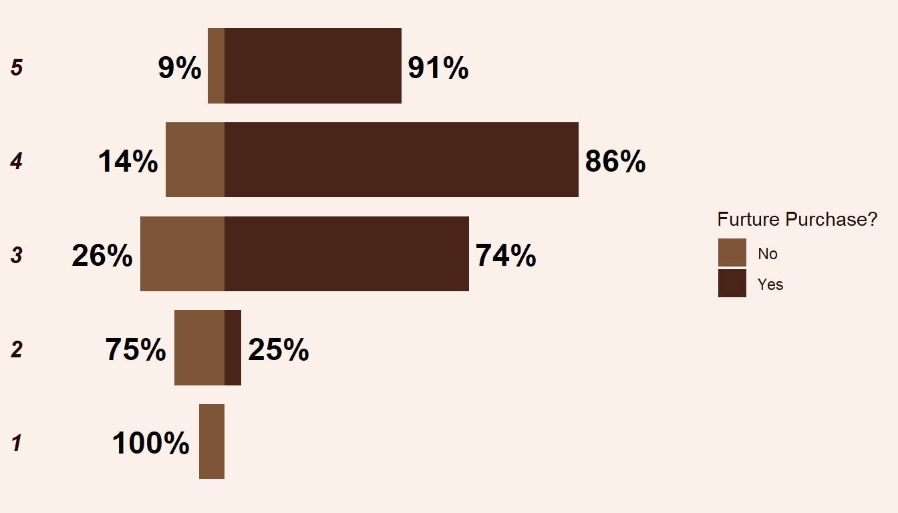
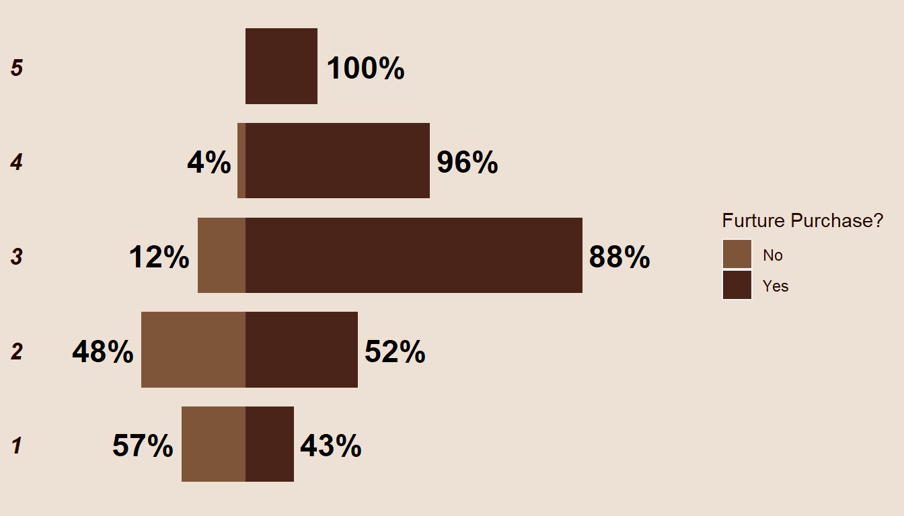
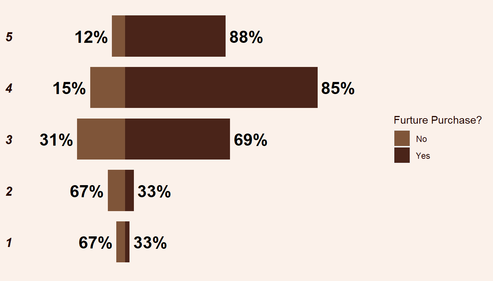
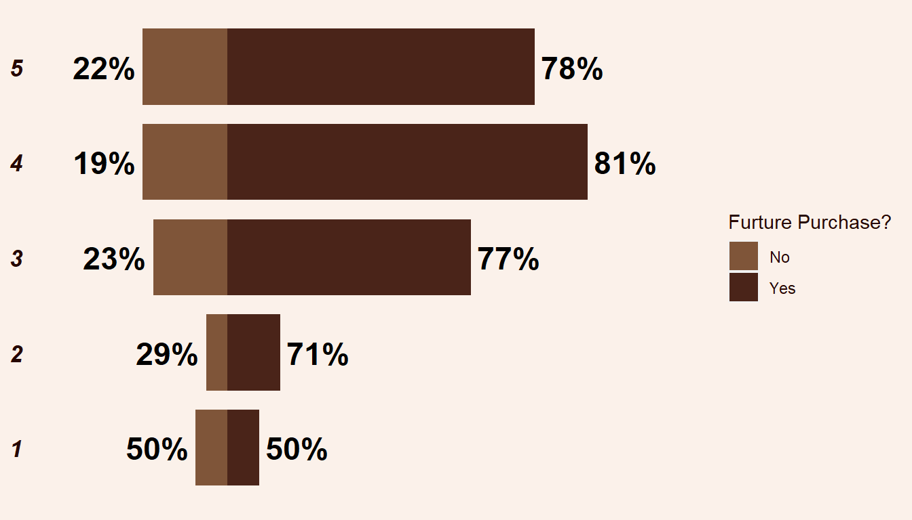

1
1%
2
3%
3
35%
4
42%
5
19%
Avg. Rating
4
Coffee House Rating
To precisely gauge customer satisfaction, participants were presented with a set of questions involving various aspects of the coffee house, including overall service, product quality, price, ambiance, and promotions. Respondents were asked to rate their satisfaction on a scale of 1 to 5, where 1 represents the lowest satisfaction level and 5 signifies the highest satisfaction or best rating. The average ratings obtained serve as a reliable indicator of the overall perception of each specific aspect of the coffee house, providing a benchmark for assessing the overall level of customer satisfaction.
Overall service: How would you rate the service at Coffee House?
The ratings provided by respondents offer an insightful perspective on the overall service of the coffee house and the general satisfaction level of customers. Notably, 42% of respondents gave a rating of 4, while 35% provided a rating of 3. Additionally, 19% of respondents gave the highest rating of 5. With an overall average rating of 4, it is evident that respondents, on the whole, are generally satisfied with the overall service provided. The distribution of ratings leans towards the positive end (3 to 5), indicating a higher level of satisfaction compared to negative ratings (2 and below).

Examining the correlation between the overall service rating and possible future purchases reveals interesting patterns. Notably, 96% of respondents who gave the highest rating of 5 expressed a strong intent to continue making future purchases. Additionally, a substantial 73% and 77% of respondents who provided ratings of 4 and 3, respectively, indicated their intention for future purchases. However, for those who rated the service as 2, there is a mixed response, with half expressing an intent to make future purchases and the other half remaining undecided. Lastly, all respondents who gave the lowest rating indicated that they would not make future purchases.
Coffee Rating: How would you rate the quality of Coffee House compared to other brands?
Ratings based on the comparison of the coffee house's coffee quality to other brands/competitors indicate a positive overall perception, with an average rating of 4. Specifically, the rating distribution reveals that 40% of respondents gave a rating of 4, 32% provided a rating of 3, and 18% rated the coffee house a perfect 5. On the lower end, 7% gave a rating of 2, while 2% gave the lowest rating of 1. This distribution underscores a generally favorable comparison between the coffee house and its competitors, with a majority of respondents expressing satisfaction with the quality of coffee offered.

The relationship between the rating of coffee house coffee compared to competitors and its connection to possible future purchases provides valuable insights into customer preferences. Notably, for ratings above 3, a significant majority of respondents clearly express their intent to continue making future purchases. Conversely, for those who rated the coffee house coffee a 2, a majority (75%) indicated they would not continue making future purchases. Furthermore, all respondents who gave the lowest rating of 1 stated that they would not be making any future purchases.
Current Price: How would you rate the price range at Coffee House?
Various factors influence customer decisions regarding price, including comparisons with competitors, customer purchasing power, and the availability of discounts and incentives. The average rating for the coffee house's price range is 3, which is generally acceptable. However, a prompt improvement in this rating could contribute significantly to customer retention. Specifically, 39% of respondents provided a rating of 3, while 22% gave a rating of 2. Additionally, 20% of respondents rated the coffee house's price range a 4. Notably, only a few respondents (7.38%) awarded the highest rating of 5.

All respondents who expressed complete satisfaction with the current price range (a rating of 5) confirmed their intention to continue purchasing more products. Similarly, a substantial 96% of respondents who gave a rating of 4 also made the decision to continue future purchases. For those who rated the price range a 3, 88% indicated their intent to keep purchasing from the coffee house. In contrast, for lower ratings like 1, only 43% expressed a commitment to continue buying, while for the 2 raters, 52% expressed the same intention.
Outlet ambiance: How would you rate the ambiance at Coffee House?
Turning attention to the coffee house ambiance, encompassing elements such as lighting, music, and furniture, and other features, the summary indicates an overall positive rating with an average score of 4. This suggests that the majority of respondents rated the coffee house's overall environment between 3 and 5, constituting 93% of the respondents. This positive reception underscores the favorable impression customers have regarding the ambiance, reflecting its potential impact on overall satisfaction.

The connection between ambiance rating and possible future purchases aligns with patterns observed in other aspects. Respondents who gave ratings of 5, 4, and 3 expressed high intentions to continue making future purchases at the coffee house, with percentages of 88%, 85%, and 69%, respectively. In contrast, for ratings below 3, a majority of respondents indicated that they would not continue purchasing from the coffee house.
Promotion: How important are sales and promotions in your purchase decision?
The survey results highlight the considerable impact of product promotions/ads, emphasizing their role in attracting new customers and reminding existing ones to make purchases. The overall average rating of 4 underscores the perceived importance and influence of coffee house promotions. This rating reflects the collective acknowledgment of the significance of promotions in shaping both current and future purchase decisions among respondents.

The importance of promotion and its impact on customer purchase decisions is evident in the survey results. Higher ratings align with a greater likelihood that customers will continue making future purchases. While there are additional factors influencing these decisions, the clear trend emphasizes the significant influence of promotions and advertisements on both the coffee house and its customers.